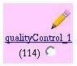
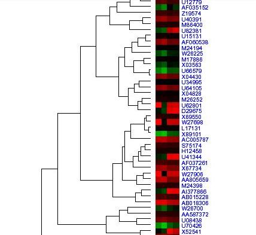

| Analyzing your data with Analysis Trees |
Install Guide Admin Guide User Guide Developer Guide
The GEOSS Analysis Tree package provides a mechanism
for users to analyze data stored in the database. By creating a flow chart
called an "Analysis Tree", users can graphically chain together
analytical and reporting modules. These modules include routines for quality
control of data, calculation of statistical values like sensitivity, specificity,
and p-values, filtering of specific data, and graphical representation
of results. The number of available analysis modules (which can be written
in many languages including R, C, and Perl) is continually expanding.
The trees allow users both to specify the order in which to run the modules,
and to set analysis parameters. The GEOSS system has a complete suite
of tools to create, edit, save, and modify Analysis Trees visually. This
document provides a high level user's guide, but can also serve as an
effective overview of Analysis Tree functionality.
Document Contents:
Future direction of Analysis Trees
How to build an Analysis Tree
Building an analysis tree is a straight-forward process. First, you need to extract the data you wish to analyze from the database. This is done from the 'Extract Data into a File' link. Once data is extracted, you can create an analysis tree. This is done from the 'Create/Run a new Analysis Tree' link, as shown in the graphic below. Note that you can modify, delete, or re-run an existing analysis tree by selecting 'Edit/Delete/Run an existing Analysis Tree'.

Creating a new tree or modifying an existing one will take you to the
'GEOSS Analysis Tree' page, which looks similar to the following graphic:
If you are creating a new tree, you will need to specify a name for the
tree. Give the tree a descriptive name. Do not include spaces in the name.
Once the tree is run, result files will appear in a directory bearing
the tree name. Note that if you later change the name of a tree and run
it again, you'll get a new directory with all the resulting files from
running the tree. The old directory will be untouched. Next, you will
need to specify the filename of the data you wish to analyze. This is
the name of the file you just extracted in the 'Extract Data into a File'
step. The tree name and input file are specified in the fields shown below.
Now the tree needs to be built. When complete, a tree should look similar
to the tree illustrated in the graphic below. As shown, the structure
resembles an inverted tree with the root at the top. In this case, the
root node is the quality control node, which will be run first. Arrows
show the flow of data between nodes. Each child node may only have a single
parent, but a parent node may have many children.
The tree structure is defined by adding, deleting, and changing nodes
until the appropriate nodes are defined. Once the nodes are defined, the
parameters for each node needs to be defined. In order to do all these
things, it is necessary to understand how to select a node. To select
a node, click on the radio button inside the node graphic. Then choose
the appropriate operation to perform on that node (either one of the icons
contained within the node, or the add/change operations below the tree).
Note that currently selected node will have a red * beside it (diffDiscover
in the above example). This node is the node that has parameters displayed
on the right hand side of the screen. This process will be discussed in
more detail when the procedures for modifying the tree are described.
Building the tree involves adding nodes and changing nodes. Initially,
your tree will have one node. If the node is not the correct type of node,
you must change it. To change a node's type:
- select the node by clicking on the radio button inside the graphic of the node
- select the desired analysis from the 'Choose' drop down select box
- click on the 'Change Node' button
- select the parent node by clicking on the radio button inside the graphic of the node
- select the desired analysis from the 'Choose' drop down select box
- click on the 'Add Node' button
Once you have added all the nodes, you will need to configure their parameters.
Each node will have its own parameters that need configuring. Sample parameters
are shown below:
To edit the parameters associated with each node, click on the radio
button inside the graphic of the node, then click on the pencil graphic.
This will change the parameters on the right hand side of the screen so
that they are the parameters associated with the selected node. You may
then edit the parameters for that node.
Default parameters are set for most fields. Currently there is no way
to return to the default values except to manually reenter them.
Mandatory fields are marked with a *. Analyses will not run correctly
without proper configuration of mandatory fields.
The editing process is illustrated below:
Configuring parameters is the most complex part of the analysis tree
process, as each module has different parameters that are specific to
the functions of that module. To get information about the module and
definitions of the parameters, click on the name of the module inside
the graphic. This will bring up the help page for that module. It provides
an overall description of the module, defines the parameters, and details
which modules provide acceptable input for the current module.

In the event that you add a node that is undesirable, it can be deleted
as shown below. Note that the root node can never be deleted (all trees
must contain at least one node). The root node can be changed to a different
analysis type if desired.
Once the tree, is configured, you need to run the tree. The update button
shown below will save the tree configuration. The run button will run
the tree.
Depending on the size of the data set, analyses can take quite a while
to run. The account owner will receive an email when the analysis is complete.
The email contains links to the results files and information about whether
the analysis run was successful. Results files can be viewed by selecting
'View My Files' from the GEOSS Member Home page. Result files will be
stored in a directory named after the tree name.
Each tree generates many results files. Each node generates a log file,
which can be used to reproduce results or to trouble shoot problems in
the analysis. Additionally, the output files for the modules and intermediate
data files for the modules will appear here. A partial listing of output
data files is shown below:
Each file can then be viewed by clicking on the file name. Output files
vary in type and content depending on the analysis nodes. Two sample output
files are illustrated below. The first is a graph generated by the quality
control module. The second is partial output from the tree draw analysis.
This file is a zoomable pdf file that illustrates expression of genes
and links each gene to the NCBI database.

Available Analysis Modules
There are currently seven analysis modules included in GEOSS. Briefly,
they are:
Quality Control:
The quality of the results of an analysis depend on the quality of the
input data. The "qualityControl" (QC) module produces some indicators
of the quality of data. They are:
- Scatter plot of data from chips within the same condition, the replicates, along with the scatter plot of data from chips of different conditions. The assumption is that the data from replicate chips should look much more similar than the data from chips with different conditions. If data from two chips are very similar, the data points should concentrate along the 45-degree line in the scatter plot. The more the points are scattered away from the 45-degree line, the less similar the chips are.
- Specificity and sensitivity. Specificity, or reproducibility, is average correlation between replicated arrays within each condition. Sensitivity is the difference between specificity and average correlation between non-replicated arrays.
The QC module performs normalization of data. It then writes the normalized data into the disk for later use by other GEOSS modules. It also has an option for 'lowess' normalization of data. This type of normalization may be required once the scatter plots show a curvature.
Differential Discovery:
The GEOSS module 'diffDiscover' performs calculations that are intended
for discovery of differentially expressed genes. It computes the following:
- Hypothesis testing by LPE method.
- Fold change in the log scale.
- Hypothesis testing by t-test.
The output from this module is formatted in a table structure for easier access and readability. The module also includes procedures for controlling the false discovery rate (FDR): Benjamini & Hochberg (1995), Benjamini & Yekutieli (2001) step-up procedures.
Westfall and Young:
The westfallYoung analysis provides permutation-based multiple testing
procedures to identify differentially expressed genes in DNA microarray
experiments. It includes resampling-based multiple testing procedures
for controlling the family-wise error rate (FWER): Bonferroni, Hochberg
(1988), Holm (1979), Sidak, Westfall & Young (1993) (referred to as minP
and maxT). The westfallYoung module also includes procedures for controlling
the false discovery rate (FDR): Benjamini & Hochberg (1995), Benjamini
& Yekutieli (2001) step-up procedures.
Filter:
The filter module allows one to triage genes for further analysis, such
as clustering and functional analysis, based on a combination of several
criteria, such as fold change, two-sample t-test p-value, and LPE-test
p-value. Reference: Nitin Jain, Jayant Thatte, Thomas Braciale, Klaus
Ley, Michael O'Connell, and Jae K. Lee (2003). Local pooled error test
for identifying differentially expressed genes with a small number of
replicated microarrays, to appear in Bioinformatics.
Add Links:
The addLinks module allows users to add html links to their output. The links take the user to the appropriate information for each gene at the NCBI site. This linking is similar to the links created by the treedraw analysis, but addLinks can be applied to the output of many modules. Links can be placed at the front or back of the output file. The output file can be in either html or txt format.
Permcluster:
The permCluster analysis performs hierarchical clustering analysis for
microarray data (it is recommended to apply this module for an array data
set with less than 2,000 genes for optimal performance). One can choose
different combinations of one of the distance metrics (e.g., Euclidean,
Pearson correlation [default], Spearman correlation) and one the of clustering
algorithms (e.g., "single", "complete", "average" [default]).
Tree Draw:
The treeDraw analysis draws the hierarchical clustering tree and corresponding
image maps (cluster-image map; CIM) from the output of a hierarchical
clustering algorithm. This will generate a high-density pdf graphic, which
can viewed and zoomed with Adobe Acrobat Reader. The gene names and annotations
at the end of the tree branches are hyperlinked to genome web sites.
Accessing Detailed Information:
For a more detailed description of each analysis, see the analysis help, which is available from the GEOSS user guide..
One of the strengths of the GEOSS Analysis Tree package is that new analysis
modules can be easily integrated. An analysis routine is any script that
can be run from the UNIX command line that accepts appropriate input and
produces output. In order to integrate an analysis into GEOSS, developers
must provide the following:
- the analysis script
- analysis documentation
- analysis configuration file
- a working example (sample input and output files)
A detailed description of each is provided below.
Analysis Script
The analysis script should be written in such a way that it can be executed
from the UNIX command line in one command. The script can be written in
any language. The file should have at least one input file and a minimum
of two output files. One output file should be the analysis result, the
other should be a log file that specifies what parameters the analysis
was run with, its input and output files, and the version of the analysis
being run.
The analysis script should accept a path parameter in the format "--settings
path <path>". The script should write files to the path specified
in this parameter. The analysis should never reference absolute paths
or write to directories other than the one specified in <path>.
The log file should be generated even if the run is not successful. The
log file should contain all errors, warnings, and successes.
A well written analysis will contain an optional flag that will increase
debugging messages sent to the log file.
Analysis Documentation
Analysis documentation is intended for the end user. It should be written in html, so it can be linked to the analysis name. Documentation should include a description of the analysis, all user configurable parameters, and small sample input/output files. Documentation should include contact information for the module maintainer.
Analysis Configuration
The analysis configuration file describes the structure of the analysis, including: the analysis name, how to run the analysis, necessary parameters, and expected input and output files. The configuration file should be called <analysisName>.cfg. This file is used to load a definition of the analysis so that it is one of the choices users are presented with when configuring analysis trees. The file has a specific format and structure. Look at current modules' configuration files for examples of the format.
Working example
A working example includes a complete input file, complete output file(s), and the command line (with parameters) necessary to get the supplied output from the supplied input. This assists the person integrating your analysis in ensuring that the module is functional.
Adding your module
An automatic configurator is planned for future releases. However, currently
it is necessary to give your analysis to a member of the GEOSS team for
integration. Please contact the administrator for your site if you have
a module to add.
Back to document contents
Future Direction of Analysis Trees
There is still on-going development effort with respect to Analysis Trees
and there are many exciting new features planned. Current plans include:
- More analysis modules.
- Ability to analyze uploaded data in addition to data stored in the system.
- Automated module addition.
- Enhanced reporting and error checking.
Conclusion
Analysis trees provide a flexible, user friendly, mechanism for analyzing
gene expression data. This integral component of GEOSS improves with every
release. User feedback is an important part of all developments and suggestions
on improvements and future directions are always welcome.
Back to top